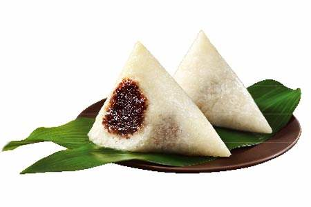

北京时间
粽子起源
偶然翻读《本草纲目》，有“古人以菰叶裹黍米煮成尖角，如棕榈叶之形，故曰粽”的记载，再望书台上的台历，猛然感悟，过十天八天就要过端午节，吃粽子了。
关于粽子最早的记载是1600年前西晋新平太守周处所写的《风士记》云：“仲夏端午，烹鹜角黍。”200年后南朝梁文学家吴钧在《续齐偕记》中说：“屈原五月五日投泊罗而死，楚人哀之，遂以竹筒贮米，投水祭之。”于是以讹传讹，相沿成俗。可见人们对忠义之士感情之弥笃了。
粽子并非源自祭奠屈原之死，它的起源说法很多。最让人信服的是“包烹”之说，就是50万年前发明用火熟食时，为了适口，用树叶包裹食物放在火中煨后剥叶而食，这虽不叫粽子，却已有粽子的雏形。经过40万年的春秋更迭，进入石烹时代，先人们已能在地上挖坑，坑中垫兽皮，再注水其中，投入烧烫的石子使水沸腾，煨煮用植物叶子包裹的原料，直至成熟，这就更像现在的粽子。
粽子的出现如本文开头所说，但一说用于祭祖;又说为了纪念屈原殉难，两说都有道理。
粽子的造型因各地的民俗风情不同而异，说法也不尽相同，有称正三角形、斜三角形、螺角形、铲头形等;或称三角形、四角锥形、枕头形、小宝塔形、圆棒形亦可。
粽叶用香蕉叶或干荷叶：如广东粽子。用干竹叶或新鲜青竹叶：如台湾粽子。硷粽通常是用青竹叶。咸粽则两种竹叶都有使用，但一般商家多使用干竹叶，较节省成本。北平粽子多用苇叶(一种芦草，叶形狭长，状似船)。粽子有荤粽、素粽、咸粽、甜粽之分。
1、北平粽子：多为甜粽，主要分为两种。
其一为纯用糯米包成的白粽子，吃时需沾白糖，并加上一点玫瑰汁木樨卤，味道香气宜人。
另一种为在糯米中包入两三颗红枣，称小枣儿粽子，吃前需冷藏，吃时会有冰凉的快感。
2、广东粽子：是所有粽子中用料最丰富的，体积特大，做法费时最久。
咸粽的内馅有火腿、咸肉、蛋黄、烧鸡、叉烧、烧鸭、栗子、香菇、虾子等。
甜馅有莲蓉、绿豆沙、红豆沙、栗蓉、枣泥、核桃等。
3、台湾粽子：台湾肉粽有南北之分。
北部粽是先将糯米用红葱头、酱油、盐、胡椒等炒至八分熟，再包以炒过的内馅如猪肉、豆干、竹笋、卤蛋、香菇、虾米、萝卜干等，置蒸笼蒸熟，具有咀嚼感，不会太黏腻。
南部粽则是将糯米与花生略为炒过，不加酱色，所包内馅有猪肉、红葱头、栗子、豆干、芋头等，再将包好的粽子以水蒸煮至糯米熟透，吃时蘸调味料，南部粽香糯性黏，较无嚼感。
4、湖州粽子：属江浙口味，可在江浙点心馆中尝到，也分甜咸两种。
甜者是以油脂红豆沙为内馅，咸者是以酱油腌过的猪肉为内馅，且每个粽子只包一块肥肉及一块瘦肉，并无其他材料，而粽子的包法也很特别，是一头凸出一头扁平的铲子头形状。
